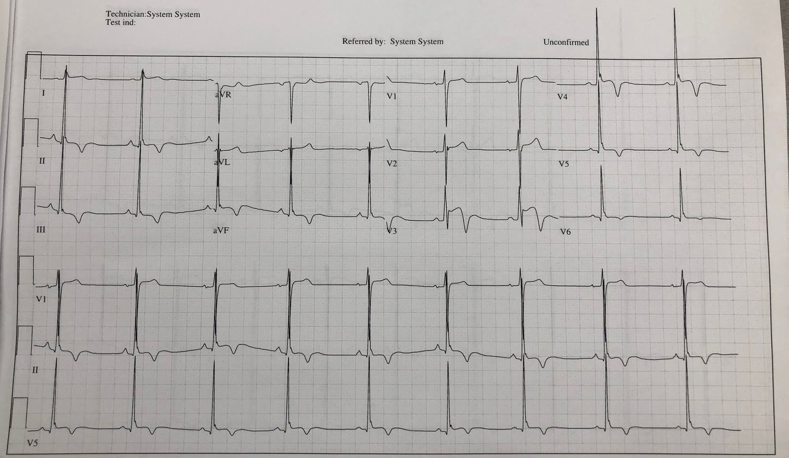
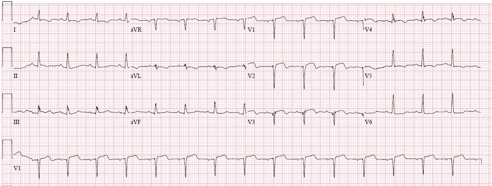
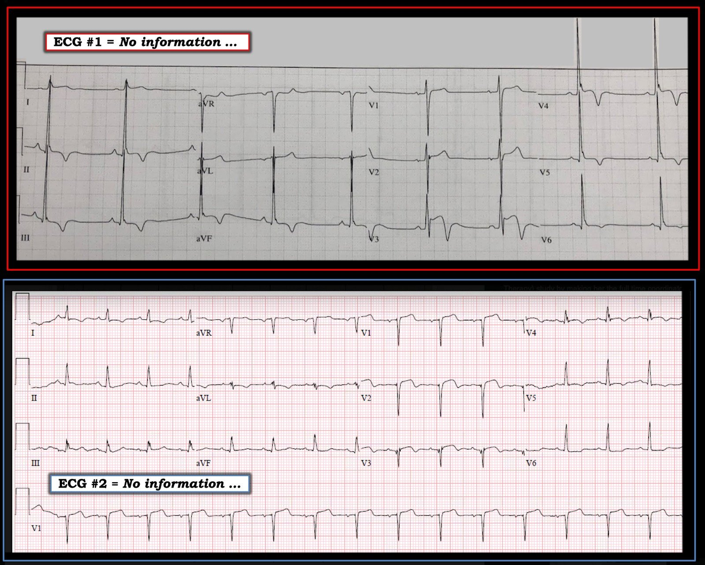

05/12/2018 — Hai ca ST chênh lên kèm sóng T đảo ngược phần cuối – một trong hai, không ca nào, hay cả hai cần tái tưới máu?
Bản dịch tiếng Việt của bài "Two cases of ST Elevation with Terminal T-wave Inversion – do either, neither, or both need reperfusion?" – Dr. Smith’s ECG Blog. Giữ nguyên toàn bộ 7 hình ảnh của bản gốc.
Tác giả: Pendell Meyers, có chỉnh sửa của Steve Smith
Tôi được gửi 2 điện tâm đồ này, không kèm thông tin lâm sàng nào ngoài đau ngực:




Một trong hai, hoặc cả hai điện tâm đồ này có cho thấy thay đổi do thiếu máu cục bộ không? Nếu có, bạn nên làm gì và vì sao?
Hãy xem lần lượt từng điện tâm đồ.
Tôi trả lời: “Sóng T đảo ngược lành tính kinh điển, tuyệt vời! Đó là biến thể bình thường nền của bệnh nhân. … Nhưng nếu bệnh sử đáng lo, chẳng hạn ngất khi gắng sức hay điều gì đó, thì bạn sẽ phải xử trí như thể đây có thể là bệnh cơ tim phì đại tắc nghẽn (HOCM), v.v. Kể thêm cho tôi nghe đi.”
Nhịp xoang với điện thế rất lớn và các bất thường tái cực đi kèm. Ở V3-V6 có các dấu hiệu kinh điển và rõ rệt của sóng T đảo ngược lành tính (BTWI), gồm sóng S nhỏ hoặc không có, sóng R lớn, sóng J nổi bật, ST chênh lên, và sóng T đảo ngược dốc, rõ rệt, tất cả đi kèm khoảng QT ngắn.
Sau đó, tôi được cho biết bệnh sử như sau:
Bệnh nhân là nam 17 tuổi, người Mỹ gốc Phi, có tiền sử hen phế quản, đến viện vì nặng ngực và khó thở trong 6 giờ. Bệnh nhân cải thiện gần như hoàn toàn sau khi dùng duoneb (albuterol và ipratropium). Tuy nhiên, các bác sĩ lâm sàng ngạc nhiên vì các dấu hiệu điện tâm đồ bất thường của bệnh nhân.
Bệnh nhân không có điện tâm đồ cũ nào trong hồ sơ. Không có tiền sử gia đình về bệnh tim hay đột tử. Các xét nghiệm đều bình thường, kể cả troponin x2. Bệnh nhân vẫn chơi bóng rổ thường xuyên mà không gặp vấn đề gì.
Tại khoa cấp cứu (ED), bệnh nhân được chụp CT mạch máu, kết quả âm tính với bóc tách động mạch chủ. Bệnh nhân được nhập viện để theo dõi và hội chẩn tim mạch. Chụp CT mạch vành bình thường, siêu âm tim cũng bình thường. Troponin xét nghiệm nhiều lần liên tiếp đều âm tính.
Bình luận của Smith: Mặc dù hình ảnh điện tâm đồ này không phải do thiếu máu cục bộ, đôi khi nó có thể gặp ở người bị bệnh cơ tim phì đại. Vì lý do này, có lẽ nên thận trọng làm siêu âm tim ở những bệnh nhân này trước khi cho phép họ tham gia hoạt động thể thao cường độ cao. [1,2]
Hãy quay lại với ca còn lại:
Nhịp xoang với sóng QS ở V1-V3. Cũng có ST chênh lên ở V1-V3, dạng lồi, kèm một ít sóng T đảo ngược phần cuối (terminal T-wave inversion).
Tôi nói với nhóm điều trị rằng bệnh nhân đã bị một nhồi máu cơ tim thành trước diện rộng, nhưng tôi không thể biết nó xảy ra cách đây bao lâu. Có thể đây là 6-12 giờ sau khi nhồi máu cơ tim thành trước đã hoàn tất hoặc đã được tái tưới máu, hoặc cũng có thể là nhiều ngày đến nhiều năm sau biến cố. Tôi nói với họ rằng tôi không thấy dấu hiệu tắc lại nào trên điện tâm đồ này, nghĩa là tôi không cho rằng điện tâm đồ này vào thời điểm này thể hiện tình trạng tắc LAD cấp cần được tái tưới máu cấp cứu.
Hãy áp dụng quy tắc phình thất trái (LV aneurysm rule) cho điện tâm đồ này để xem nó có ủng hộ giả thuyết của chúng ta không:
Đây là quy tắc, nên dùng khi nghi ngờ có phình thất (có sóng Q ở V1-V4, đặc biệt là sóng QS): “Nếu có một chuyển đạo trong số V1-V4 có tỷ số T/QRS lớn hơn 0,36, thì đó là nhồi máu cơ tim cấp. Nếu nhỏ hơn 0,36, thì đó là nhồi máu bán cấp (trên 6 giờ) hoặc cũ.” [3,4]
V1 = 2/10 = 0,20
V2 = 2/12 = 0,17
V3 = 1,5/7 = 0,21
Như vậy, quy tắc này phù hợp với diễn giải chủ quan bằng mắt của chúng ta rằng đây là nhồi máu bán cấp hoặc cũ.
Sau đó tôi được biết bệnh nhân có tiền sử nhồi máu cơ tim do tắc LAD cách đây hai tháng, đã được đặt stent.
Bệnh nhân được đưa đi thông tim cấp cứu vì tiền sử và các dấu hiệu điện tâm đồ, bao gồm ST chênh lên (mặc dù ST chênh lên là một cách rất tệ để phân biệt thiếu máu cục bộ với không thiếu máu cục bộ).
Thông tim cho thấy các stent hoàn toàn thông tốt.
Ba lần troponin liên tiếp đều không phát hiện được.
Các điện tâm đồ liên tiếp không thay đổi.
Bệnh nhân được xuất viện về nhà.
Những điểm cần học:
Có nhiều nguyên nhân gây ST chênh lên, gây sóng T đảo ngược phần cuối, và gây cả hai cùng lúc. Kinh nghiệm với các ca trên blog này có thể dạy bạn cách phân biệt chúng.
Hội chứng Wellens (hay tái tưới máu nói chung) là một nguyên nhân quan trọng gây sóng T đảo ngược phần cuối. Xem các ca dưới đây để có ví dụ. Tuy nhiên, hội chứng Wellens bao gồm cả hết đau ngực và bảo tồn sóng R, bên cạnh sóng T đảo ngược. Vì vậy, ca thứ hai này không phải là một ví dụ của hội chứng Wellens.
Classic Evolution of Wellens’ T-waves over 26 hours (Diễn tiến kinh điển của sóng T Wellens trong 26 giờ)
2 Cases of Resolved Chest Pain with Dynamic Terminal T-wave Inversion (2 ca hết đau ngực kèm sóng T đảo ngược phần cuối thay đổi động)
Subtle Dynamic T-waves, Followed by LAD Occlusion and Arrest (Sóng T thay đổi động kín đáo, sau đó tắc LAD và ngừng tim)
Pseudonormalization of Wellens’ Waves (Giả bình thường hóa sóng Wellens)
Xem thêm dưới đây các ca khác có hình thái phình thất trái:
Tachycardia and ST Elevation. (Nhịp nhanh và ST chênh lên.)
Subtle Anterior STEMI Superimposed on Anterior LV Aneurysm Morphology (STEMI thành trước kín đáo chồng lên hình thái phình thất trái thành trước)
Is this acute STEMI? LV Aneurysm? Would you give Thrombolytics? (Đây có phải STEMI cấp? Phình thất trái? Bạn có cho thuốc tiêu sợi huyết không?)
ST elevation and QS-waves. ECG is equivocal. Use ED Echo!! (ST chênh lên và sóng QS. Điện tâm đồ mơ hồ. Hãy dùng siêu âm tim tại khoa cấp cứu!!)
Tài liệu tham khảo:
Tỷ số T/QRS để phân biệt STEMI thành trước với phình thất trái thành trước:
1. Papadakis M, Carre F, Kervio G, và cs. The prevalence, distribution, and clinical outcomes of electrocardiographic repolarization patterns in male athletes of African/Afro-Caribbean origin (Tỷ lệ hiện mắc, phân bố và kết cục lâm sàng của các hình ảnh tái cực trên điện tâm đồ ở vận động viên nam gốc Phi/Afro-Caribe). Eur Heart J. 2011;32(18):2304-2313. doi:10.1093/eurheartj/ehr140
2. Wells S, Rowin EJ, Bhatt V, Maron MS, Maron BJ. Association Between Race and Clinical Profile of Patients Referred for Hypertrophic Cardiomyopathy (Mối liên quan giữa chủng tộc và đặc điểm lâm sàng của bệnh nhân được chuyển đến vì bệnh cơ tim phì đại). Circulation. 2018;137(18):1973-1975.
3. Thẩm định (Klein, Shroff, Smith): Electrocardiographic criteria to differentiate acute anterior ST-elevation myocardial infarction from left ventricular aneurysm (Tiêu chuẩn điện tâm đồ để phân biệt nhồi máu cơ tim ST chênh lên thành trước cấp với phình thất trái)
4. Xây dựng (Smith): T/QRS ratio best distinguishes ventricular aneurysm from anterior myocardial infarction (Tỷ số T/QRS phân biệt tốt nhất phình thất với nhồi máu cơ tim thành trước)

==================================
Bình luận của KEN GRAUER, MD (5/12/2018):
==================================
Luôn là một bài thực hành tuyệt vời khi được đưa các bản ghi và “Thử thách” xem bạn nghĩ có hay không có thay đổi cấp tính. Tôi đi đến kết luận giống hệt như Dr. Smith & Dr. Meyers về 2 điện tâm đồ trong ca này — dù qua một con đường trực giác hơi khác. Để rõ ràng — tôi nhắc lại các bản ghi trong Hình 1.
==========================


==========================
Điện tâm đồ #1:
- Biết một chút Bệnh sử là MẤU CHỐT. Như Dr. Meyers đã nói — Nếu bệnh sử của bệnh nhân này đáng lo ngại, thì trách nhiệm “chứng minh” vẫn thuộc về chúng ta, phải chứng minh rằng không có thay đổi điện tâm đồ cấp tính, chứ không phải ngược lại. HÃY NHỚ — Bệnh nhân có tái cực sớm trên điện tâm đồ nền có thể xuất hiện các thay đổi chồng lên của STEMI cấp, mà đôi khi khó nhận ra vì các thay đổi tái cực ST-T lành tính nền rõ rệt.
- Dù vậy, ngoài các dấu hiệu trông lành tính đã được Dr. Meyers & Dr. Smith mô tả chi tiết — tôi nghĩ các dấu hiệu này trên điện tâm đồ #1 có lẽ không cấp tính vì: i) Các sóng Q ở các chuyển đạo dưới-bên rất nhỏ (chúng trông giống sóng q vách bình thường ở một bệnh nhân như thế này, với trục mặt phẳng trán hướng xuống dưới); ii) Không có ST chênh xuống soi gương; iii) Ngoại trừ chuyển đạo V3 — các chuyển đạo có sóng T đảo ngược sâu nhất lại có sóng R cao nhất; và, iv) Chuyển đạo V3 hoàn toàn phù hợp với vai trò một “chuyển đạo chuyển tiếp” (tức là, V3 trông đúng như tôi dự đoán đối với một chuyển đạo nằm ở giữa sóng T dương và QRS chủ yếu âm thấy ở V2 — và — sóng R khổng lồ kèm sóng T đảo ngược sâu ở V4).
- Hình ảnh điện tâm đồ của bệnh nhân bệnh cơ tim phì đại (HCM) rất thay đổi. Trong số các dấu hiệu điện tâm đồ có thể gặp ở những bệnh nhân này có LBBB, RBBB, IVCD, sóng Q lớn ở nhiều chuyển đạo (đặc biệt ở các chuyển đạo bên và/hoặc dưới); lực vách nổi bật (tức là, sóng R tương đối cao ở các chuyển đạo trước) — và/hoặc tăng rõ rệt biên độ QRS ở nhiều chuyển đạo kèm các bất thường ST-T đáng kể (như thấy ở đây trên điện tâm đồ #1). Và đôi khi, điện tâm đồ của bệnh nhân bệnh cơ tim phì đại lại bình thường đến bất ngờ. Điều cần nhớ: Điện thế QRS nổi bật và các bất thường ST-T rõ rệt trên điện tâm đồ #1 rõ ràng phải khiến ta cân nhắc khả năng HCM. Siêu âm tim được chỉ định nếu có bất kỳ lo ngại nào.
==========================
Điện tâm đồ #2:
- Biết một chút Bệnh sử là MẤU CHỐT. Như Dr. Meyers đã nói — diễn giải lâm sàng đúng của điện tâm đồ #2 là, “Nhồi máu cơ tim thành trước không rõ thời điểm, có thể mới xảy ra” — và cần đối chiếu với lâm sàng.
- Những lý do giúp chúng ta BIẾT rằng đã có nhồi máu cơ tim thành trước trước đó trên điện tâm đồ #2 gồm — i) Có sóng lệch Q ban đầu phân mảnh ở chuyển đạo V3 (và khi bạn thấy sóng lệch qrS ban đầu phân mảnh này — nó gợi ý rất mạnh có nhồi máu cũ thực sự); ii) Có mất sóng r (dường như có một sóng r nhỏ ở V1 — nhưng nó bị sóng q ở V3 xóa sạch); iii) Sóng q ở V4 lẽ ra không có mặt (vì sóng q này ở V4 lớn hơn sóng q nhỏ ở V5 — và có vẻ như không có sóng q ở V6); và, iv) ST dạng vòm (coving) và sóng T đảo ngược rõ nhất ở các chuyển đạo trước có sóng lệch ban đầu (sóng q) bất thường.
- Những lý do để nghi ngờ rằng ngay cả khi các thay đổi trên điện tâm đồ #2 là mới xảy ra — chúng có lẽ không phản ánh tắc mạch vành cấp, gồm — i) Thường cần một ít thời gian để hình thành sự phân mảnh và mức mất các lực khử cực hướng ra trước như thấy ở chuyển đạo V1, V2 và V3 của điện tâm đồ #2; và, ii) Mức ST chênh lên ở các chuyển đạo trước là khiêm tốn so với mức mất đáng kể các lực khử cực hướng ra trước và mức độ sóng T đảo ngược. LƯU Ý: Luôn có ngoại lệ, và có khả năng hình ảnh như trên điện tâm đồ #2 hình thành trong một khoảng thời gian khá ngắn … — NHƯNG — “dáng vẻ” của bản ghi này khiến tôi nghĩ các thay đổi trên điện tâm đồ #2 có lẽ không cấp tính.